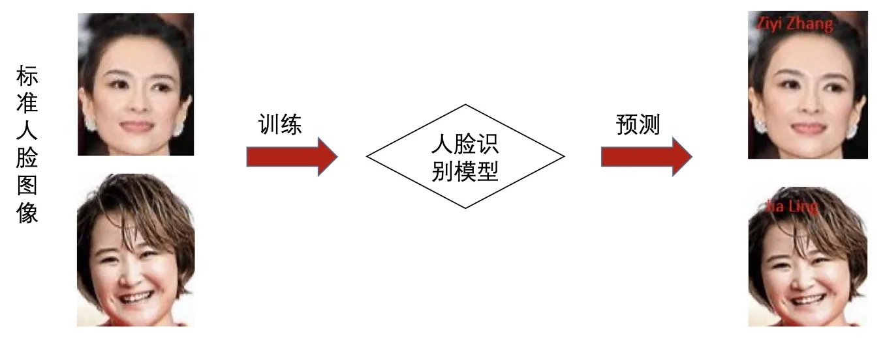
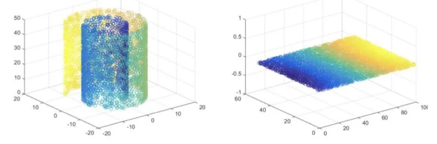

计算机视觉 · 第 8 章 人脸识别
8.6 人脸识别的概念与发展
到这里，人脸已经找出来、也摆正了，接下来才是「识别」本身。这一节先分清三个模块里谁才是识别算法，再看一遍完整的识别流程，最后把三十多年的人脸识别史压成三个阶段——早期算法、人工特征加分类器、深度学习——并交代每个阶段的代表方法与它们的局限。
1. 人脸识别的三个模块
课件把整套流程里的三个模块列了出来：
- 人脸检测（Face Detection）；
- 人脸对齐（Face Alignment）；
- 人脸特征表征（Feature Representation）。
并明确指出：人脸特征表征即是人脸识别算法。它接受的输入是标准化的人脸图像，通过特征建模得到向量化的人脸特征，最后通过分类器判别得到识别的结果。
这句话把边界划清楚了：检测和对齐是在「准备输入」，它们不负责判断是谁。真正决定「这张脸是谁」的，是特征表征这一步——把一张人脸图像压缩成一个紧凑且可判别的特征向量，再用这个向量去比较或分类。本章后面讲的 DeepID、FaceNet，讲的都是这一件事。
2. 人脸识别流程
把三个模块和前面的检测、对齐串起来，就是一条完整的人脸识别流水线：图像的输入经过检测与对齐得到标准化人脸图像，再送入人脸识别模型，由模型输出识别结果。

流程里最值得注意的是「标准化」这个前提。标准化意味着模型看到的人脸已经被裁好、摆正、缩放到统一尺寸——也就是说，识别模型的泛化压力，有很大一部分被前两个模块替它扛掉了。这也解释了为什么现实系统里，检测和对齐出错往往比识别模型本身更致命。
3. 人脸识别算法的三个阶段
课件把人脸识别算法的发展分成三个阶段：早期算法、人工特征 + 分类器、深度学习。前两个阶段常被一起称为传统方法，第三个阶段从 2012 年之后开始。
（1）早期算法：几何、模板与子空间
早期的算法有基于几何特征的算法、基于模板匹配的算法、子空间算法等多种类型。课件的定义是：子空间算法将人脸图像当成一个高维的向量，将向量投影到低维空间中，投影之后得到的低维向量可以对不同的人具有良好的区分度；此外还有用流形学习进行非线性降维的一类做法。

这几类方法有一个共同的假设：人脸的主要变化可以用一个低维线性（或低维流形）结构来刻画。这个假设在受控条件下成立——正面、光照均匀、表情中性时，子空间方法（如 PCA、LDA 那一系）效果相当好；但一旦进入无约束环境，姿态和光照带来的非线性变化就不是一个线性子空间能装得下的了。
（2）人工特征 + 分类器
第二阶段把问题拆成两半：特征由人设计，分类交给成熟算法。课件的说法是：分类器有较成熟的方案，如神经网络、支持向量机、贝叶斯等；关键在于人工特征的设计，它要能有效地区分不同的人。描述图像的很多特征都先后被用于人脸识别问题，包括 HOG、SIFT、Gabor、LBP 等。
这些特征的共同点是刻画局部纹理和梯度结构——LBP 描述局部纹理模式，HOG 描述梯度方向分布，Gabor 是一组多尺度多方向的滤波器，SIFT 则是尺度不变的关键点描述子（本课程第 4 章讲过）。把它们用在人脸上，本质上还是「人告诉机器该看什么」。
这个阶段的天花板也就在这里：特征的好坏取决于设计者对「什么对人脸有区分度」的理解，而人能预先想到的变化总是有限的。这与第 1 节里讲的「针对每种变化分别设计方法」是同一个局限。
（3）深度学习阶段
转折点是 2012 年：深度学习在 ILSVRC-2012 上大放异彩后，很多研究者都在尝试将其应用在自己的方向，这极大地推动了深度学习的发展。卷积神经网络在图像分类问题中脱颖而出，通过学习得到的卷积核明显优于人工设计的特征 + 分类器的方案。
课件列出了这一阶段的代表网络与年份：
- DeepID 系列：CVPR 2014、CVPR 2015；
- FaceNet：CVPR 2015；
- SphereFace：CVPR 2017；
- CosFace：CVPR 2018；
- ArcFace：CVPR 2019。
这份清单里有两条线索值得先点出来，后面两节会展开：DeepID 系列的思路是「用卷积网络学特征，再用精心设计的损失函数把类内距离压小、类间距离拉大」，从 DeepID1 一路迭代到 DeepID3；FaceNet 则直接把人脸映射到欧几里得空间，用三元组损失（triplet loss）让距离本身成为相似度度量——识别、验证、聚类都变成空间里的距离比较。而清单后半段的 SphereFace、CosFace、ArcFace，都是沿着「如何设计更好的角度间隔损失」这条线继续往下走的。
本节小结
- 人脸识别算法包含三个模块：人脸检测、人脸对齐、人脸特征表征；其中人脸特征表征才是人脸识别算法，它把标准化的人脸图像转成向量化的特征，再用分类器判别。
- 完整流程是：输入图像 → 检测与对齐 → 标准化人脸图像 → 人脸识别模型 → 识别结果。前两个模块替识别模型扛掉了姿态与尺度的归一化压力。
- 发展分三个阶段：早期算法（几何特征、模板匹配、子空间算法把人脸高维向量投影到低维空间、流形学习做非线性降维）；人工特征 + 分类器（HOG、SIFT、Gabor、LBP 配上神经网络/SVM/贝叶斯，关键是人工特征设计）；深度学习（2012 年之后，CNN 学到的卷积核明显优于人工特征）。
- 深度学习阶段的代表网络：DeepID 系列（CVPR 2014、2015）、FaceNet（CVPR 2015）、SphereFace（CVPR 2017）、CosFace（CVPR 2018）、ArcFace（CVPR 2019）——前两个是下一节的主角。